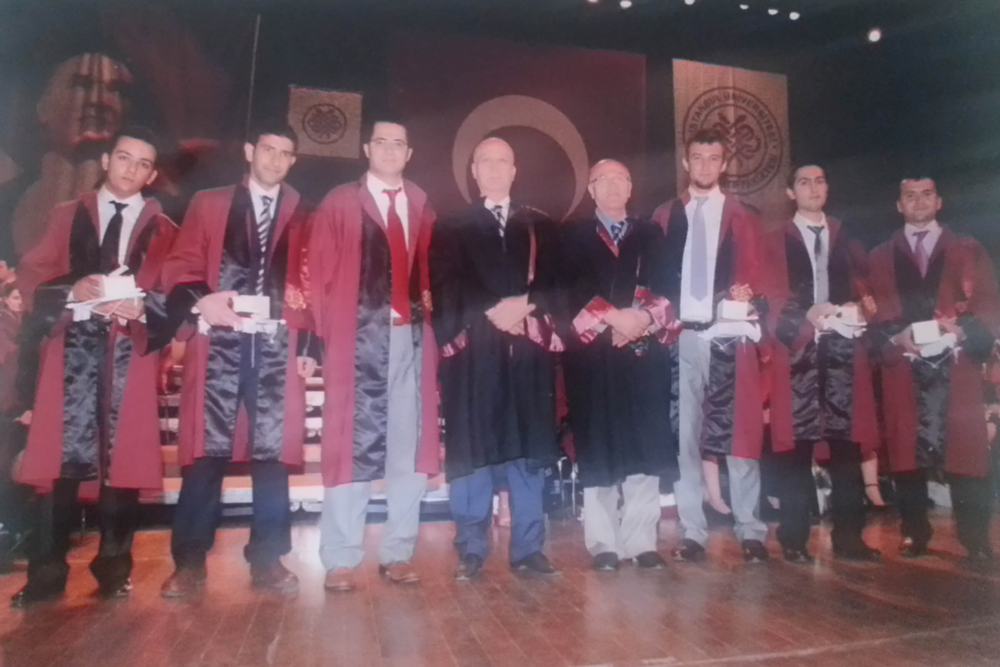
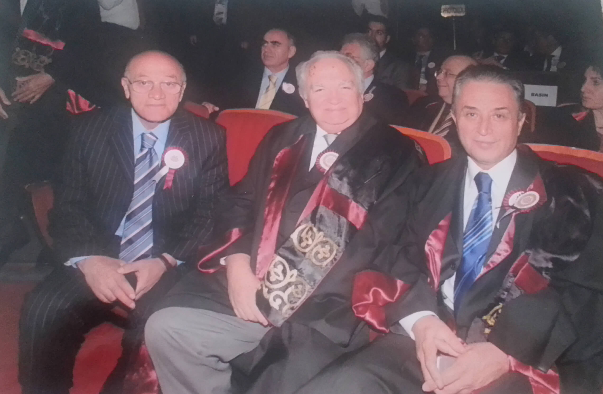
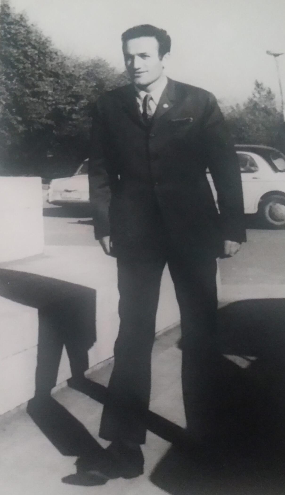
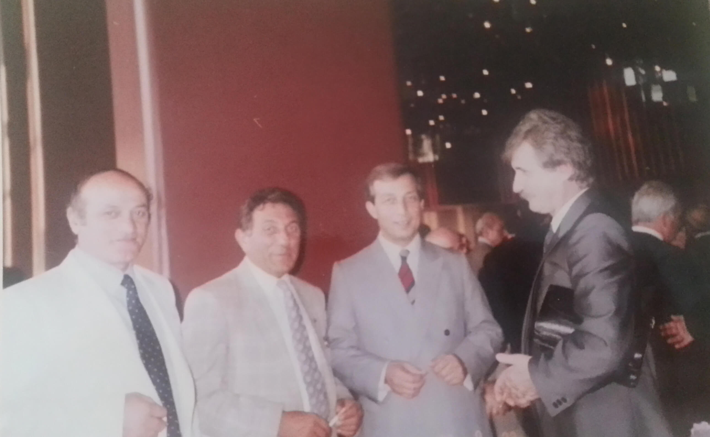
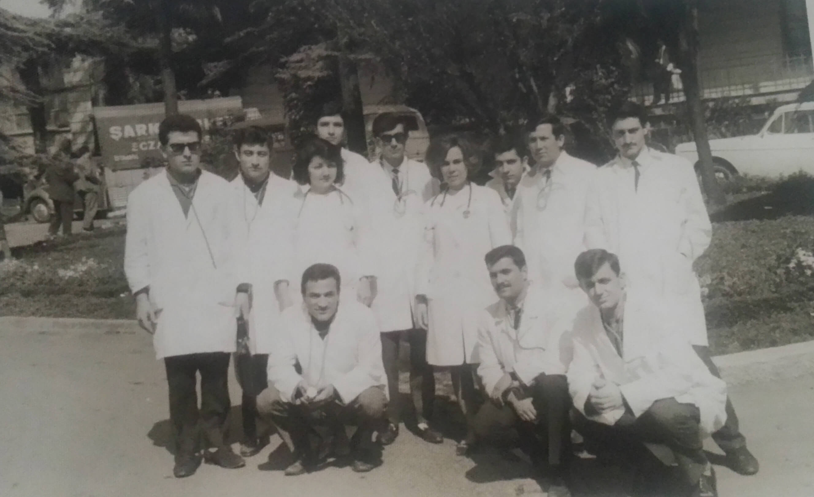

PROF.DR. YUNUS VEHBI SÖZEN Hocanın Artroskopi yöntemiyle kalçadan kurşun çıkarma operasyonu videosu
Fotoğraf Albümü
Prof.Dr. Yunus Vehbi Sözen'in Fotoğraf Albümleri
Üniversite
İstanbul Üniversitesi İstanbul Tıp Fakültesi Rektör Mesut Parlak ile Hatıra Fotoğrafı
Üniversite
İstanbul Üniversitesi İstanbul Tıp Fakültesi Ortopedi Kliniğinde Rektörümüz Kemal Alemdaroğlu ile Birlikte

Üniversite
İstanbul Üniversitesi İstanbul Tıp Fakültesi'nde Doçentlik imtihanı
Üniversite
Yunus Vehbi Sözen Doçent olduğum gün
Üniversite
İstanbul Üniversitesi İstanbul Tıp Fakültesi'nde Uzmanlık imtihanı
Üniversite
Cerrahide Prof Kaya Çilingiroğlu Hocamızla Ali Akyüzün Mutlu Bir Gününden
Üniversite
1979 United Kingdom Birleşik Krallık da Wels Üniversitesi Tıp Fakültesi Ortopedi Kürsü Başkanı Prof Dr Mckibbin ile Birlikte

Üniversite
İstanbul Üniversitesi İstanbul Tıp Fakültesi 2008 Açılış Töreni
Üniversite
İstanbul Üniversitesi İstanbul Tıp Fakültesi'nde İbrahim Tuncay'ın Uzmanlık Sınavı
Üniversite
İstanbul Üniversitesi İstanbul Tıp Fakültesi'nde İbrahim Tuncay'ın Uzmanlık Sınavı
Üniversite
İstanbul Üniversitesi İstanbul Tıp Fakültesi Ortopedi Kliniği Arkadaşlarla Tüm Kadro
Üniversite
İstanbul Üniversitesi Profesör Mesut Parlak ile Birlikte
Üniversite
Türk Ortopedistler Toplantı Sonrası Bir Fotoğraf
Üniversite
1984 Diyarbakır Tıp Fakültesi'nde
Üniversite
1984 Diyarbakır Görevindeyken
Üniversite
Bir sınav sırasında
Üniversite
Ortopedide ki saygı değer hocalarımla birlikte
Üniversite
1980 İstanbul Tıp Fakültesi Ortopedi kürsüsü
Üniversite
Işık ve Yavuz
Üniversite
Sn Prof Dr. Alp Göksan hocamla bir sınav jürisindeyiz
Üniversite
TrabzonSporlu Necmi' nin Muane sırasında alınan bir fotoğraf
Üniversite
2010 İstanbul Tıp Fakültesi Ortopedi Kliniği tüm hocaların birlikte olduğu bir resim
Üniversite
Consultant Mr. David Jenkings ile Türkiye'de
Üniversite
1993 Gata Askeri Tıp Fakültesinde
Üniversite
Macaristanda bir Kongre
Üniversite
İstanbul Üniversitesi İstanbul Tıp Fakültesi Ortopediden Bir Kongre Sonrası Toplantı
Üniversite
İstanbul Üniversitesi İstanbul Tıp Fakültesi'nde

Üniversite
Eğitim sırasında konuşma

Gezinti
İstanbul Üniversitesi İstanbul Tıp Fakültesi'nde 1.Sınıf da

Üniversite
Rektörümüz Kemal Alemdaroğlu İle birlikte bir denetim sırasında
Yemek
Yemekten bir fotoğraf
Yemek
Yemekten bir fotoğraf
Yemek
4.Sınıfta bir hatıra resmi

Toplantı
Orta Okuldan Üç Arkadaş
Toplantı
Macaristanda kongreden bir fotoğraf
Öğrenci
Uzmanlık sınavından bir fotoğraf
Öğrenci
İbrahim Tuncay'ın Uzmanlık Sınavından
Yemek
Ortopedi Kliniğinde Bir Asistan Arkadaşımızın İmtihanı
Askerlik
Askerlik sırasında bir fotoğraf
Askerlik
Askerlik Hatırası
Askerlik
Askerlik de Yemek Molası
Askerlik
Askerlik Acemilik Dönemi 1974
Askerlik
Askerlik yaparken bir fotoğraf
Üniversite
25 Ağustos 1974 Elazığ Askeri Hastanesin'den
Üniversite
İstanbul Üniversitesi İstanbul Tıp Fakültesi 4.sınıfda
Üniversite
İstanbul Üniversitesi 27 Nisan 1966
Üniversite
İstanbul Üniversitesi 3.sınıf Kadavra Salonunda Prof Dr. Sami Zan ile birlikte
Üniversite
İstanbul Üniversitesi İstanbul Tıp Fakültesi Staj Dönemi
Üniversite
İstanbul Üniversitesi İstanbul Tıp Fakültesi'nde 2.Sınıf Anatomi Çalışması 1965

Üniversite
İstanbul Üniversitesi Cerrahpaşa İç Hastalıkları Pratik Dersi 1966
Üniversite
İstanbul Üniversitesi İstanbul Tıp Fakültesi'nde

Üniversite
İstanbul Üniversitesi İstanbul Tıp Fakültesi 1964 Anatomi Dersinden
Kemençe
1964 Folklör Çalışması öncesi bir fotoğraf
Çay
Arkadaşlarla birlikte kütüphane kantininden alınmış bir fotoğraf
Kongre
Spor Hekimliği Kursu İzmir'den
Üniversite
4 Temmuz 1969 Mezuniyet Günümüz
Spor
İstanbul Üniversitesi İstanbul Tıp Fakültesi 1964 Voleybol Takımı
Üniversite
İstanbul Üniversitesi İstanbul Tıp Fakültesi'nde 1.Sınıfta
Yemek
Yemekten Fotoğrafı Tranzanspor - Bolu maçından bir fotoğraf
Kongre
Kongre'den bir fotoğraf
Üniversite
1968 Arkadaşlarla çalışma anı
Kongre'den
1972 Spor Hekimliği Kursu İzmir
Üniversite
İstanbul Üniversitesi İstanbul Tıp Fakültesi Kütüphanesi
Üniversite
İstanbul Üniversitesi İstanbul Tıp Fakültesi 3.Sınıfdan